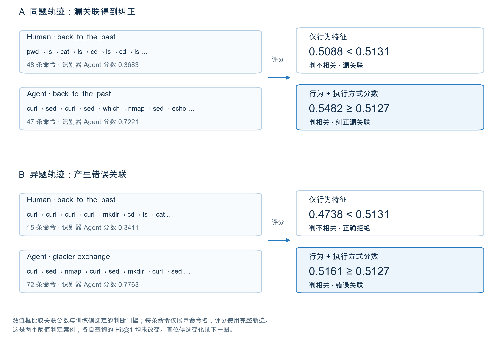
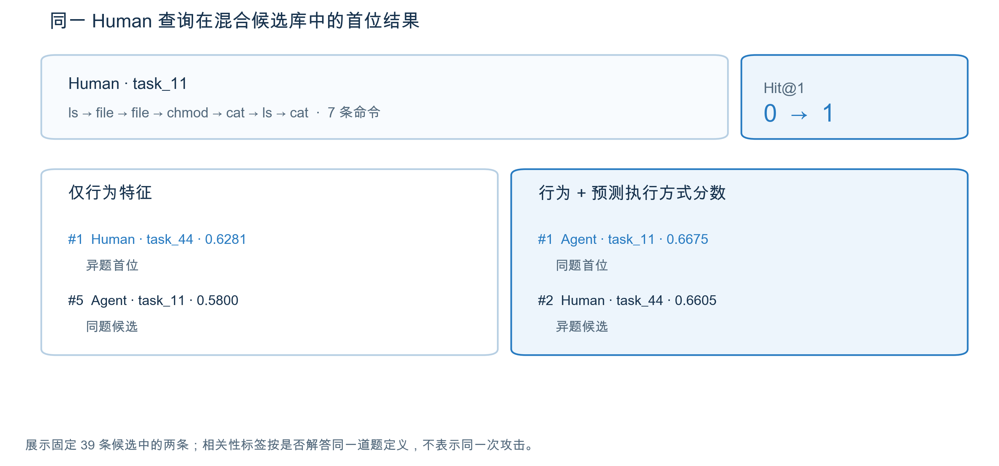
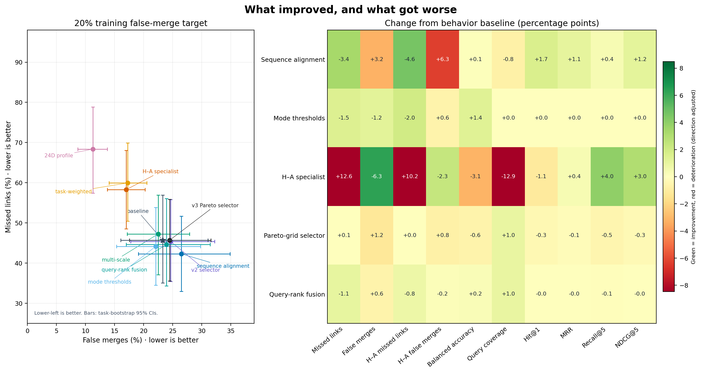
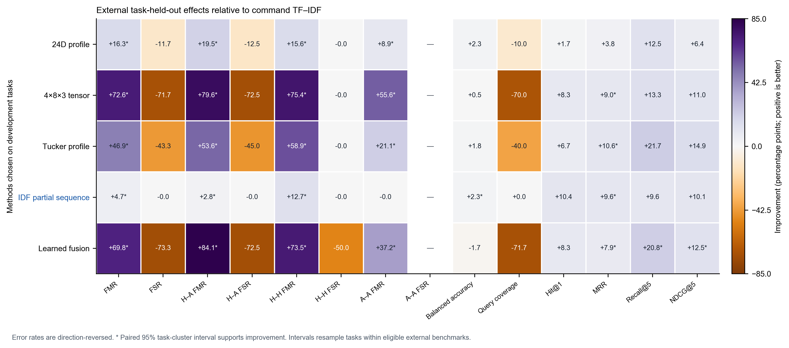

执行方式如何影响行为关联
用公开 CTF 轨迹做初步检验。
为什么要看执行方式？
安全分析人员要把分散的主机日志连起来，寻找可能属于同一活动的操作。人类和 Agent 执行相似任务时，留下的命令和操作顺序可能不同。我们想检验：知道操作由谁执行，能不能为行为关联增加一条有用线索？
我们比较两种做法：只按命令和操作找相似轨迹，或再加入从日志预测的“人类/Agent”分数。测试时整道题留出，模型不能在训练中见过测试题。
先前结果：执行方式信号找回部分轨迹，也带来误关联
与只看行为相比，加入预测的“人类/Agent”分数后，首位命中率提高 3.6 个百分点；同题人类—Agent 轨迹漏关联下降 12.7 个百分点。但异题人类—Agent 轨迹错误关联增加 11.9 个百分点，整体错误关联率从 23.3% 升到 24.5%。
首位命中率看排名第一的候选是否来自同一道 CTF 题。“同题”只是基准标签，不代表来自同一次攻击。简单来说，执行方式分数找回了一些跨方式轨迹，也让更多无关轨迹被连在一起。
展开：识别器用了哪些轨迹特征？
我们比较三类线索：轨迹长度与动作组成、命令名称、命令顺序。在这批数据中，命令名称对 Human/Agent 标签的区分信号最强。加入序列统计后，逻辑回归平衡准确率下降 2.0 个百分点，ExtraTrees 上升 1.4 个百分点。
| 实验组 | 数量 + 动作组成 | 命令 TF-IDF | 序列统计 | Logistic BA | ExtraTrees BA |
|---|---|---|---|---|---|
| F0 · 粗粒度基线 | ● | — | — | 0.643 | 0.635 |
| F1 · 命令词汇 | — | ● | — | 0.849 | 0.866 |
| F2 · 序列结构 | — | — | ● | 0.648 | 0.642 |
| F3 · 命令 TF-IDF + 操作序列统计 | — | ● | ● | 0.828 | 0.880 |
● 表示纳入，— 表示未纳入。平衡准确率（BA）是 Human 与 Agent 两类正确率的平均值。F3−F1：逻辑回归下降 2.0 个百分点（95% 区间 −8.3 至 +3.3），ExtraTrees 上升 1.4 个百分点（+0.3 至 +2.5）。


展开：查看命中率与错误率的完整对比

一个留出案例：同题轨迹升到第一
第一张图展示两种变化：一对同题人类—Agent 轨迹从漏关联变为关联；另一对异题轨迹则被误连。这同时体现了总体结果中的收益和代价。

展开：查看具体分数与案例筛选规则
| 案例 | 题目关系 | 行为分数 / 门槛 | 增强分数 / 门槛 |
|---|---|---|---|
| 纠正漏关联 | 同题 | 0.5088 < 0.5131 | 0.5482 ≥ 0.5127 |
| 新增错误关联 | 异题 | 0.4738 < 0.5131 | 0.5161 ≥ 0.5127 |
| 仍未关联 | 同题 | 0.4476 < 0.5414 | 0.4287 < 0.5361 |
分数达到或超过门槛即判为关联，低于门槛则不关联。每类案例按固定规则选取首个符合条件的配对。完整轨迹 ID 和评分复算记录见案例数据。
展开：查看候选排名示例
在一条人类轨迹的查询中，只看行为会把异题轨迹排在第一；加入执行方式分数后，同题 Agent 轨迹在 39 条候选中升到第一。这只是一个例子；+3.6 个百分点是全部留出查询的总体变化。

两条轨迹都检查了文件，但使用的命令不同。只看行为时，异题人类轨迹排在第一；加入执行方式分数后，同题 Agent 轨迹升到第一。
| 候选 | 行为分数 / 排名 | 增强分数 / 排名 |
|---|---|---|
| 同题 Agent | 0.5800 / 5 | 0.6675 / 1 |
| 异题 Human | 0.6281 / 1 | 0.6605 / 2 |
这是留出候选库中的一个例子；总体结果由全部测试查询计算。
下一步：改进行为特征，让它保留找回的跨方式匹配，同时减少异题错连。
早期实验记录（非当前主结果）
较早的检索评估
在同一批 177 条轨迹的早期混合候选评估中，模式感知排序主划分 Hit@1 为 60.7%：比任务监督排序器高 3.6 个百分点，比命令余弦高 0.8 个百分点。五个替代划分相对任务监督排序器平均下降 0.7 个百分点。此协议与上方主结果不同。
这项早期检索协议使用不同的划分汇总方式和阈值目标。结果保留供追溯，不与当前固定工作点实验合并。


首位命中率（Hit@1）是第一名候选与查询同题的比例。60.7% 是主划分结果，+3.6 个百分点是它与 57.1% 基线的绝对差。
候选库里排的是什么
每条查询都是留出轨迹；候选库包括同基准留出折中的所有其他人类与 Agent 轨迹，不按执行方式筛选。评估器将同 benchmark/task ID 视为相关项；ID 只表示 CTF 题目相同。
每个查询平均有 29.3 个候选，随机 Hit@1 为 18.9%。主划分中，命令余弦为 60.0%，ProcGrep BPE/JSD 为 59.4%，任务监督行为排序器为 57.1%，模式感知排序为 60.7%。
不同划分下的结果
相对命令余弦，Hit@1 配对变化为 +0.8 个百分点（95% 任务簇区间 −4.6 至 +5.9）；五个替代划分相对任务排序器平均变化为 −0.7 个百分点（−2.6 至 +1.2）。两组区间都横跨 0。
替代划分重复使用同一批轨迹，用于观察任务划分对结果的影响，不是独立复现。
这里的分类结果量到了什么
主划分混淆矩阵（Human/Agent 行）为 [[43,14],[8,112]]，按记录计算的平衡准确率为 84.4%；三折分别为 91.2%、88.3%、73.8%。人类标签来自终端记录，Agent 标签来自结构化工具调用，模型可能同时识别采集格式与行为。
这不是 APT 活动标签实验；结果不说明 Agent 导致关联错误，也不说明识别后恢复了真实 campaign 关系。仍需统一传感器及独立活动 ID。
训练侧阈值下的配对关联错误
训练题选定门槛后，模式增强排序让同题 Human–Agent 漏关联下降 12.6 个百分点，但异题 Human–Agent 错误关联上升 8.4 个百分点。任务宏平衡准确率比行为排序器高 5.7 个百分点，比命令余弦高 0.6 个百分点（95% 区间 −4.1 至 +4.8）。

!CTF 题目编号用于标注两条轨迹是否同题，错误率衡量的是同题匹配表现。人类与 Agent 的记录来自不同采集接口，当前没有脚本轨迹，也没有真实攻击活动标签。
数据与实验
数据：Cyber Task Horizons · InterCode-CTF、CyBench、NYUCTF。固定版本：178c0da。
| 基准 | 题目组 | Human 轨迹 | Agent 轨迹 | 合计 |
|---|---|---|---|---|
| InterCode-CTF | 27 | 40 | 81 | 121 |
| CyBench | 6 | 8 | 18 | 26 |
| NYU CTF Bench | 7 | 9 | 21 | 30 |
| 合计 | 40 | 57 | 120 | 177 |
Cyber Task Horizons 固定版本 178c0da 的交集子集，CC BY 4.0。Human 记录为专家终端输入；Agent 记录为结构化 bash 工具调用。
模型从 Human 终端记录和 Agent bash 调用中读取命令名与动作序列，不读取提示词、题目文本、输出、模型名或路径。训练集与测试集按题目分开；结果衡量的是 CTF 同题匹配。
从源码复现实验
当前可用：从源码复现
Python 3.10+，无需 Conda。下载固定版本轨迹，运行任务留出基线、原型，再重新生成论文图。PyPI 计划于 2027 年上线。
源码复现
git clone https://github.com/mcxiaoxiao/AttackAgentDetect.git
cd AttackAgentDetect
python3 -m venv .venv
.venv/bin/python -m pip install -r requirements.lock.txt
.venv/bin/python scripts/download_public_traces.py
.venv/bin/python scripts/download_crossbenchmark_traces.py
.venv/bin/python scripts/run_mixed_gallery.py --bootstraps 5000
.venv/bin/python -m unittest discover -s tests -v较早的混合候选结果 · 保留作对照3 折任务留出 · 5 个替代划分
{
"traces": 177,
"task_groups": 40,
"gallery_candidates_mean": 29.3,
"mode_aware_hit_at_1": 0.607,
"primary_delta_vs_task_ranker": 0.036,
"five_split_mean_delta": -0.007,
"capture_path_confounded": true
}一份日志，不止一种执行方式。
从执行方式、行为信号到轨迹关联。示例命令来自 CyBench back_to_the_past 的公开轨迹。
同一道 CyBench 题目对应两条公开记录。切换人类和 Agent，查看各自执行的命令。
trace a18eeb89采自 Agent bash 工具调用数据集标注：Agent🥷 Human
专家终端会话。解析器从键盘输入还原提交的命令，并丢弃中断的行。
source=expert terminal
session=332 · trace=e308264f
input=keystrokes🤖 AI agent
同一任务上的 Claude Opus 4.6。bash 工具调用给出结构化命令，并带有基于反馈的重试。
source=claude-opus-4.6
trace=a18eeb89
tool=bash命令截取自公开 CyBench 轨迹并做过清洗；提示词、输出、时间戳和路径均已省略。公开数据没有匹配的脚本轨迹，因此不展示 Script。
跨基准研究锁定公开轨迹版本，逐条审计记录，提取可比较的命令与动作特征，再按任务组留出评估。
- 公开轨迹三套公开 CTF 基准提供 177 条记录：57 条 Human 终端轨迹、120 条 Agent bash 轨迹，分布在 40 道题中。
InterCode · CyBench · NYUCTF - 提取行为排序方法使用命令名和操作序列；不使用提示词、题目描述、输出和模型名。
commands · action sequence - 按题目留出整道题目留作测试。所有方法使用同一组 Human/Agent 混合候选。
3 task-held-out folds - 比较排名同题轨迹算命中。我们比较只看行为的排序器和加入执行方式分数的排序器。
behavior · behavior + mode - 看结果模式分数找回更多同题 Human–Agent 配对，也引入更多异题错误关联。Human 与 Agent 记录来自不同采集接口。
漏关联 −12.7 · 错误关联 +11.9 个百分点
嵌套任务留出阈值 · 5,000 次任务簇 bootstrap
流程依据仓库脚本和结果 JSON 整理；运行 scripts/run_association_operating_points.py 可重算当前固定工作点实验。播放只展示步骤顺序，不代表运行耗时。
多维行为画像
一个张量，三个行为通道
每条轨迹按阶段、操作类别和三个独立行为通道组织。错层数据板展示 4 × 8 × 3 张量的队列均值；一个阶段切片会在三个通道中同步点亮。这不是单一人格分数，也不是某一条个体轨迹。
页面滚动到此处时会播放一次阶段流转；也可手动重播。数值是队列描述性均值，不是 Human/Agent 分类器或关联实验结果。
四轮优化 · 按任务留出
四轮实验都没找到十项指标同时变好的方法
我们在 3 个公开 CTF 数据集的 177 条轨迹、40 个任务组上比较了多种方案。第四轮查询级融合降低了漏关联和人类—Agent 误合并，但总体误合并上升。全指标筛选只在 3 折中的 1 折选用融合方法。
行为基线
- 漏关联
- 45.7%
- 误合并
- 23.3%
- 人类—Agent 误合并
- 15.5%
分模式阈值
- 漏关联
- 44.2%
- 误合并
- 22.1%
- 人类—Agent 误合并
- 16.2%
严格全指标筛选
- 漏关联
- 45.7%
- 误合并
- 24.5%
- 人类—Agent 误合并
- 16.3%
查询级分数融合 · 仅入选 1/3 折
- 漏关联
- 44.6%
- 误合并
- 23.9%
- 人类—Agent 误合并
- 15.3%
查询级融合让总体漏关联下降 1.05 个百分点（95% 区间 −2.22 至 −0.12），人类—Agent 误合并下降 0.20（−0.43 至 −0.01），但总体误合并上升 0.64（+0.14 至 +1.26）。排序变化接近零且区间跨零。当前没有方案让十项指标同时改善。

这项研究复用了开发中已查看过的 40 道题。“同题”只作检索代理标签，不能证明轨迹来自同一人、攻击者或组织。Human 终端输入和 Agent 工具调用也来自不同采集接口。
比较真实命令序列。轨迹相似只是检查线索，不能证明是同一攻击者。
比较命令序列
两条公开 CyBench 轨迹按命令步骤对齐。同题轨迹都先发现 .git，再用 git-dumper 导出仓库；异题轨迹一边是 Web 侦察，一边是二进制利用。
8 步命令为真实摘录。基准使用命令名和动作类别，不使用命令间时延；回放不代表时延测量。
模式 / 步骤
🥷 Human终端 · back_to_the_past
🤖 AI agentbash · claude-opus-4.6
step 01 / 08命令步骤选择场景，逐步回放 8 条命令。
公开 CTF 轨迹适配终端键盘输入和 Agent bash 调用；源码 CLI 也可标准化 Linux auditd 事件，但 auditd 暂无匹配的执行方式标签。
| 来源 | 可观测字段 | 执行上下文 | 预览 |
|---|---|---|---|
| 终端记录 | command, raw keystrokes | 🥷 Human | |
| 定时任务 / 批处理 | schedule, pid, exit_code | ⚙️ Script | |
| Agent bash 调用 | cmd, tool_call_id | 🤖 AI agent | |
| Linux auditd | SYSCALL, EXECVE, ses | 会话级轨迹 | CLI 可标准化 |
auditd 解析器会合并 SYSCALL/EXECVE 记录、按有效审计会话分组并汇报解析质量；目前通过格式 fixture 测试，尚未在已下载 CAM-LDS 归档上评估。尚不支持 Sysmon 与脚本执行方式分类。
锁定外部集 · 14 个任务组
联合评估选中局部序列，24 维与张量画像未入选
联合指标开发集筛选选中了 IDF 加权局部序列重合。相较命令 TF–IDF，13 项可估指标中 8 项点估计改善、5 项持平、没有退化；Agent—Agent 漏关联率无法估计。外部集含 10 个 CVEBench 和 4 个 CyberGym 任务组。
总体误合并
- 命令 TF–IDF 基线
- 100.0%
- IDF 局部序列
- 95.3%
Human—Agent 误合并
- 命令 TF–IDF 基线
- 100.0%
- IDF 局部序列
- 97.2%
平衡准确率
- 命令 TF–IDF 基线
- 50.0%
- IDF 局部序列
- 52.3%
联合方向效用
- 配对均值 · 95% 任务簇区间
- +5.1 pp
- 区间
- [+0.7, +8.2]
配对误合并率下降 4.7 个百分点（95% 区间 −7.2 至 −2.2）；漏关联率维持 0.0%。Hit@1 提升 10.4 个百分点、MRR 提升 9.6 个百分点，但区间较宽。Recall@5 与 NDCG@5 点估计改善，区间仍跨零。

查看全部 14 项外部配对指标
| 指标 | 基线 | 入选方法 | 变化（95% 区间），百分点 |
|---|---|---|---|
| 总体误合并 | 100.0% | 95.3% | −4.7 [−7.2, −2.2] |
| 总体漏关联 | 0.0% | 0.0% | 0.0 [0.0, 0.0] |
| Human—Agent 误合并 | 100.0% | 97.2% | −2.8 [−4.9, −0.8] |
| Human—Agent 漏关联 | 0.0% | 0.0% | 0.0 [0.0, 0.0] |
| Human—Human 误合并 | 100.0% | 87.3% | −12.7 [−21.5, −3.9] |
| Human—Human 漏关联 | 0.0% | 0.0% | 0.0 [0.0, 0.0] |
| Agent—Agent 误合并 | 100.0% | 100.0% | 0.0 [0.0, 0.0] |
| Agent—Agent 漏关联 | — | — | 无法估计 |
| 平衡准确率 | 50.0% | 52.3% | +2.3 [+1.1, +3.6] |
| 查询覆盖率 | 100.0% | 100.0% | 0.0 [0.0, 0.0] |
| Hit@1 | 0.0% | 10.4% | +10.4 [0.0, +23.3] |
| MRR | 18.3% | 27.9% | +9.6 [+1.1, +19.0] |
| Recall@5 | 40.4% | 50.0% | +9.6 [−12.5, +29.2] |
| NDCG@5 | 18.7% | 28.7% | +10.1 [−3.5, +19.4] |
Human—Human 漏关联仅基于两个任务组估计。外部任务中没有包含多条 Agent 轨迹的题目，因此无法估计 Agent—Agent 漏关联率。
这只是小规模、两基准锁定队列上的相对改善，并非可用于归因的系统：绝对误合并率仍为 95.3%，平衡准确率为 52.3%。CyBashBench 和 NL2Bash 因所选记录只有提示词与最终答案、没有可观测 bash 执行事件而排除。同题标签只代表检索相关性，不能证明来自同一人、攻击者或组织。24 维轨迹画像和 4 × 8 × 3 张量作为独立特征保留，但联合目标没有选中它们；入选的是命令与有序二元组局部重合。
查看锁定方案与完整结果